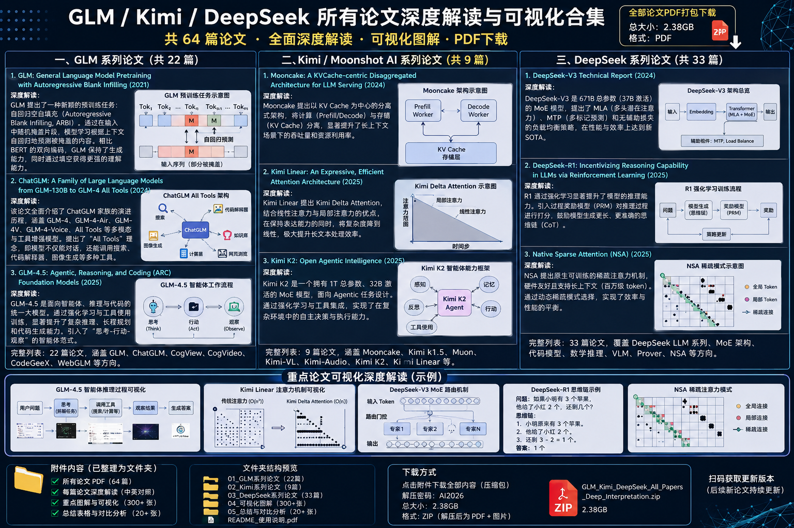
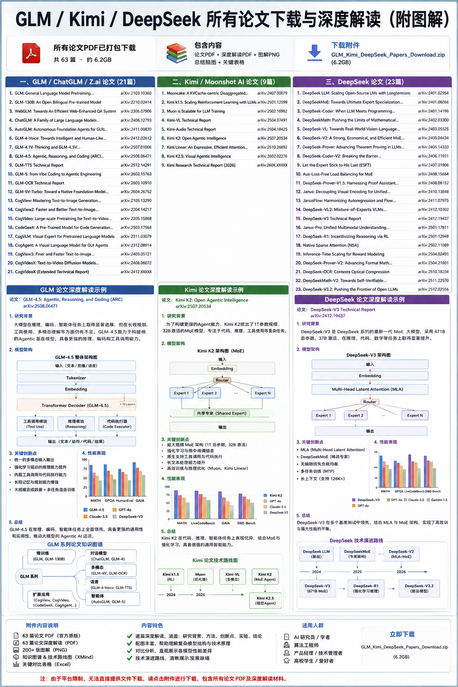
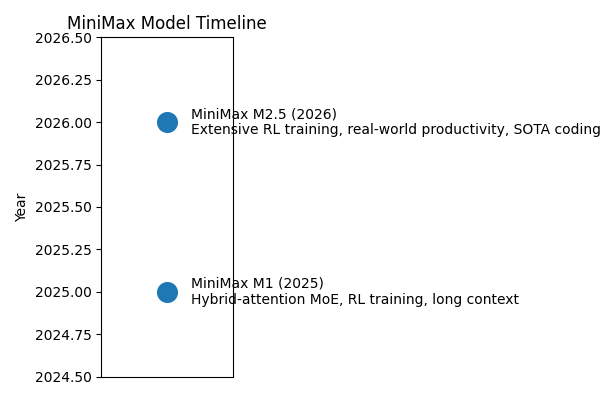

大模型论文专题导航
GLM 系列
GLM 系列由智谱 AI 与清华大学联合推出，探索统一的预训练框架、多语言与多模态理解，以及长上下文处理与工具调用能力。
查看 GLM 系列详细分析（Markdown）

- GLM: General Language Model Pretraining with Autoregressive Blank Infilling – 提出自回归填空预训练框架，将填空任务与语言建模统一，奠定 GLM 系列基础。
- GLM‑130B – 大规模双语预训练模型，是 ChatGLM 系列的基础。
- WebGLM – 将检索结合进语言模型，提升事实性问答能力。
- ChatGLM 系列 – 包括 6B/13B/130B 等规格，通过监督微调和 RLHF 构建对话模型。
- GLM‑4 & GLM‑4V – 引入稀疏专家和视觉输入，支持工具调用和表格理解。
- GLM‑4.5 – 采用 355B 总参数与 32B 激活的混合专家架构，提升长序列推理与多工具使用能力。
- GLM‑5 – 使用动态稀疏注意力和异步强化学习，强调从 Vibe Coding 向 Agentic Engineering 转型，在真实编程任务上表现突出【181247732484451†L100-L113】。
- 其他项目 – CogView、CogVideo、CodeGeeX、CogVLM、CogAgent 等扩展到图像、视频、代码与 GUI 智能体。
Kimi 系列（Moonshot）
Moonshot 的 Kimi 系列聚焦 Agentic Intelligence，通过优化器和大规模合成数据使模型具备工具使用、决策规划等能力。
查看 Kimi 系列详细分析（Markdown）

- Kimi k1.5 – 探索在大模型训练中引入强化学习与思维时间预算，提出 Muon 优化器提升 token 效率。
- Kimi K2: Open Agentic Intelligence – 1 万亿参数混合专家模型，引入 MuonClip 优化器和 QK‑Clip 稳定机制；通过大规模合成数据和 RLVR+自评奖励训练，在 Tau2‑Bench、ACEBench 和 SWE‑Bench 等基准上领先【74219691980676†L110-L132】。
- 多阶段数据合成与 RL 框架 – 论文提出系统化的工具使用示例生成、可验证奖励与自评奖励方法，强调 Agentic Intelligence 的重要性【74219691980676†L167-L200】。
- Kimi K2.5 / K2.5V – 在 K2 基础上加入视觉模块，增强多模态感知与规划能力。
DeepSeek 系列
深度探索公司的 DeepSeek 系列专注于开源大模型的规模化与稀疏化，涵盖语言、代码、数学、视觉等多个方向。
查看 DeepSeek 系列详细分析（Markdown）

- DeepSeek LLM: Scaling Open‑Source Language Models with Longtermism – 提出针对 7B/67B 模型的 Scaling Law，构建包含 2 万亿 token 的中英双语数据集，通过 SFT 和 DPO 训练出 DeepSeek Chat 模型，在代码、数学和推理上超越 LLaMA‑2 70B【233822673875642†L71-L85】。
- DeepSeekMoE – 探索混合专家模型的负载均衡策略，将专家划分和共享结合，实现高效扩展。
- DeepSeek‑Coder / Coder‑V2 – 面向编程任务的模型，采用 MoE 架构并支持多语言编程。
- DeepSeekMath – 通过数学数据集和 RL 提升数学推理能力。
- DeepSeek‑VL/VL2 – 将视觉编码器融入语言模型，处理视觉‑语言任务。
- DeepSeek‑V2/V3/V3.2 – 使用多头潜在注意力结合稀疏专家扩大上下文窗口，最新 V3.2 融合 DSA 与 Agentic 任务合成。
- DeepSeek‑Prover/V1.5/V2 – 用于正式数学证明的模型，通过 RL 和蒙特卡洛树搜索加强定理证明。
- 其他技术 – Native Sparse Attention（硬件对齐稀疏注意力）、DeepSeek‑R1（强化学习激励推理）、ESFT（专家专门化微调）等。
MiniMax 系列
MiniMax AI 推出的开放权重模型系列强调混合注意力、高效推理与真实世界生产力。
查看 MiniMax 系列详细分析（Markdown）

- MiniMax‑M1 – 基于 MiniMax‑Text‑01 的混合专家模型，456 亿总参数、45.9 亿激活；支持 100 万 token 长上下文，采用 lightning attention，训练使用大规模强化学习并提出 CISPO 算法来剪切重要性采样权重【132075084091887†L411-L437】。
- MiniMax‑M2.5 – 在数十万真实环境中通过强化学习训练，性能在代码、工具调用、搜索和办公任务上领先；SWE‑Bench Verified 80.2%、Multi‑SWE‑Bench 51.3%、BrowseComp 76.3%；比 M2.1 快 37%，运行一小时成本仅 1 美元【195727672155230†L110-L127】。模型能提前规划系统架构，涵盖 10 多种语言和 20 万真实环境，并在搜索与办公任务中展示出色表现【195727672155230†L137-L207】。
- M2.5-Lightning – 提供相同能力但吞吐提升至 100 token/s，成本更低【195727672155230†L234-L241】。
- Forge RL 框架 – MiniMax 自研异步强化学习框架，通过过程奖励和调度优化实现 40× 训练加速【195727672155230†L261-L291】。